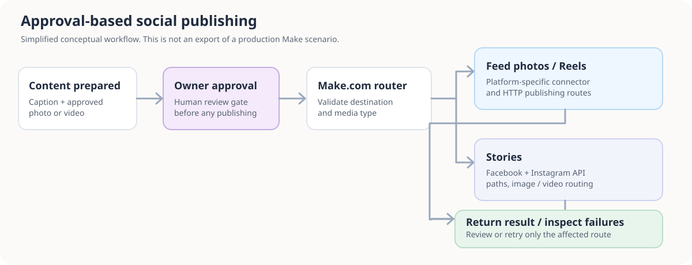
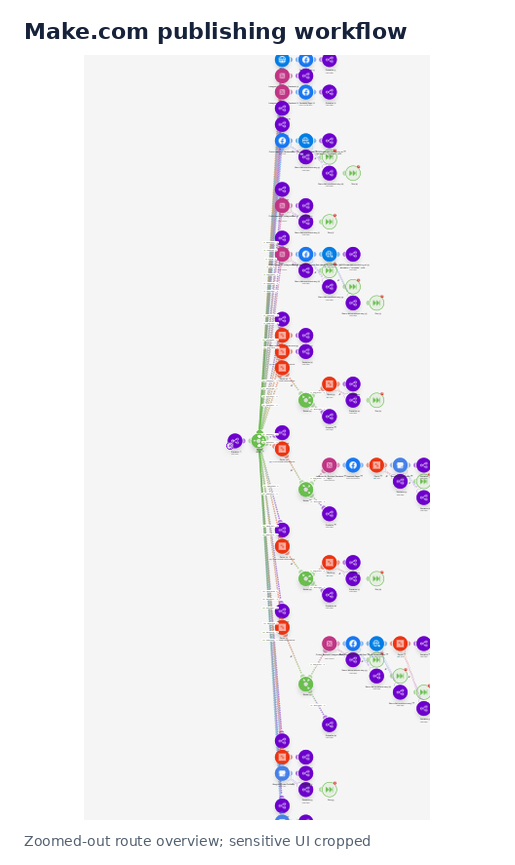
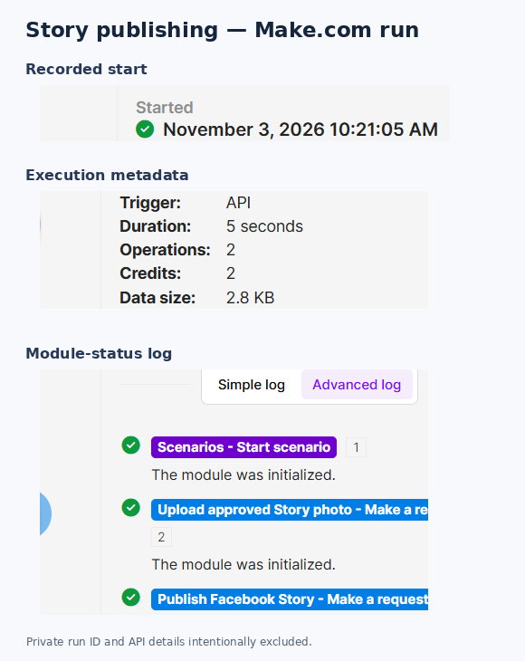
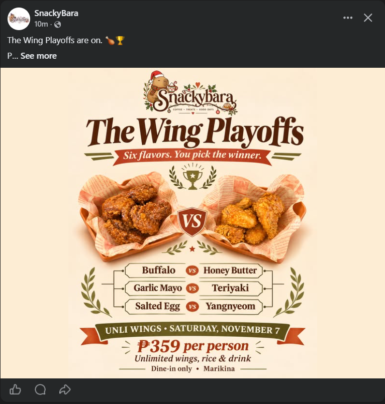

Designed and maintained Make.com workflows that route approved photos, Reels, and Stories to supported social channels using conditional logic, platform integrations, and API requests.
Multi-channel social publishing repeats similar steps across several platforms but every content type has different requirements. Publishing errors can also affect only one destination. The business needed a controlled process that kept creative approval with the owner and automated the technical steps.
The solution
Two active, on-demand Make scenarios separate feed photos / Reels from Stories. An upstream review approves content first; Make routes approved requests according to platform and media type and returns outcome information.

Conceptual architecture—not a production blueprint.
Conditional routingMedia-type and destination-specific branches rather than one rigid sequence.
Native + API modulesFacebook/Instagram integrations, Make HTTP requests, and response handling.
Human approvalBrand owner retains control before any publish operation is requested.
Failure visibilityRoute-level status and targeted follow-up paths where supported.
Evidence from implementation

Cropped view of the active Make posts/Reels scenario.

Selected run evidence with private API values and run ID excluded.

Example Facebook post. Not the same transaction as the separate Story run screenshot.
Verified: active scenario configurations and historical run records. Not verified: unique successful publication count, hours saved, sales attributable to the workflow, or end-to-end success for every configured destination.
What this demonstrates
Turning repetitive operations into maintainable Make automation; integrating APIs with branching/validation; enforcing a human approval checkpoint; and planning for partial failures instead of blind retries.
Related work
See the SnackyBara website (Astro/Tailwind) and source repository. Live website rendering and the placeholder contact-form integration remain unverified.
Self-directed business project, not a paid client case study. No company credentials or raw workflow exports are published.